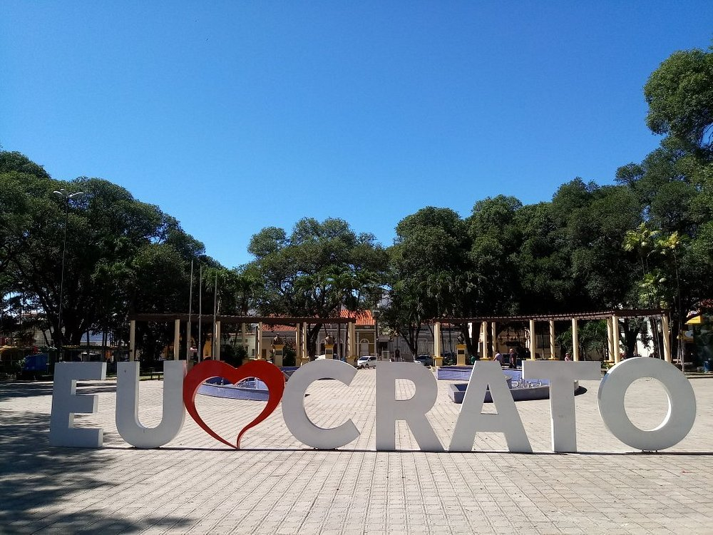

Informações técnicas sobre relevo, população, IDH etc.
| INFORMAÇÕES | |
|---|---|
| Municípios limítrofes | ao norte Farias Brito; a leste Caririaçu, Juazeiro do Norte e Barbalha; a oeste Nova Olinda e Santana do Cariri e a sul Exu e Moreilândia no estado de Pernambuco. |
| Fundação | 25 de janeiro de 1764 (257 anos) |
| Área total | 1 009,202 km² |
| Clima | Tropical (As) |
| IDH | 0,713 — alto |
| PIB | R$ 1.478.136 |
| INFORMAÇÕES TERRITORIAIS | |
|---|---|
| Número de habitantes | 133.031 habitantes |
| Superfície de Crato |
115 791 hectares
1157,91 km² |
| Densidade populacional | 114,1 ha./km² |
| Altitude de Crato | 446 metros de altitude |
| Coordenadas geográficas decimais |
Latitude:
-7.22956
Longitude: -39.4088 |
| Coordenadas geográficas sexagesimais | Latitude: 7° 13' 46'' Sul , Longitude: 39° 24' 32'' Oeste |
| INFORMAÇÕES DO MUNICÍPIO | |
|---|---|
| Endereço da Prefeitura Municipal de Crato |
Crato
Prefeitura de Crato
Largo Júlio Saraiva, S/N - Centro Crato - CE, 63100-347 Brasil |
| Telefone da prefeitura |
(88) 3521-9600
Internacional: +55 88 3521-9600 |
| Fax |
(88) 3523-3362
Internacional: +55 88 3523-3362 |
| Endereço electrónicoda prefeitura |
crato@municipios-ce.com.br
|
| Site oficial do município | crato.ce.gov.br |
| INFORMAÇÕES DO ADMINISTRATIVAS | ||
|---|---|---|
| Prefeito de Crato | Jose Ailton de Sousa Brasil | |
| Partido politico | PP | |
| INFORMAÇÕES DE TRANSPORTE | |
|---|---|
| Transporte urbano disponível | Não Disponível |
| Aeroporto |
Aeroporto Regional do Cariri 15.4 km
Aeroporto de Picos
234.5 km
Aeroporto de Petrolina
269.5 km
|
| INFORMAÇÕES DE DISTÂNCIA A OUTRAS CIDADES | ||
|---|---|---|
| São Paulo : 1974 km | Rio de Janeiro : 1792 km | Brasília : 1330 km |
| Salvador : 647 km | Belo Horizonte : 1485 km | Manaus : 2331 km |
| Curitiba : 2281 km | Recife : 508 km mais perto | Goiânia : 1501 km |
| Belém : 1196 km | Porto Alegre : 2823 km | Guarulhos : 1952 km |
| Campinas : 1928 km | São Luís : 754 km | São Gonçalo : 2121 km |
| Distância calculada em linha reta! | ||
Conheça mais sobre a história da Crato.
As terras às margens do rio Jaguaribe-Mirim (e seus afluentes) e da Chapada do Araripe eram habitadas por diversas etnias indígenas, dentre elas os Kariri, Aquijiró, Guariú, Xocó, Quipapaú e tantas outras, antes da chegada das entradas e/ou missões religiosas dos portugueses, italianos, baianos, paraibanos e sergipanos.
Com a expulsão dos neerlandeses do nordeste brasileiro, os portugueses e outros brasileiros puderam adentrar e explorar melhor a terra do Siará Grande.
Acredita-se que a primeira penetração no território do Cariri aconteceu durante o século XVII, com a bandeira dos irmãos Lobato Lira. Desta bandeira, participaram dois religiosos: um padre secular e um frade capuchinho, que ganharam a confiança dos índios Kariri e conseguiram aldeá-los. Estes exploradores subiram o leito do Jaguaribe-Mirim e instalaram nos arredores da cachoeira dos Kariri (cachoeira de Missão Velha).
Tempos depois, o frade capuchinho Carlos Maria de Ferrara organizou, às margens do rio Itaitera (água que corre entre pedras), o maior e mais importante aldeamento de silvícolas na região. Este recebeu o nome de "Missão do Miranda", em homenagem a um dos chefes da tribo batizado com esse nome. Mais tarde, também aparecem as denominações "Miranda" e "Cariris Novos". A Missão do Miranda, sob a administração dos capuchinhos, prosperou, devido à fertilidade do solo e abundância de água, que possibilitaram o cultivo da cana-de-açúcar, mandioca e cereais. Manuel Carneiro da Cunha e Manuel Rodrigues Ariosto requereram, através da lei de sesmaria, a posse das terras adjacentes ao Rio Salgado, fato que culminou na elevação da missão à povoação.
A primeira manifestação de apoio eclesiástico aconteceu em terras doadas pelo capitão-mor Domingos Álvares de Matos e sua mulher, Maria Ferreira da Silva. Doação de terras feita aos índios Cariús da Missão ratificada perante o tabelião Roque Corrêia Merreiras no dia 13 de dezembro de 1743. Essa doação localizava-se, inicialmente, em terras encravadas a dois quilômetros a sudeste da povoação, transferindo-se, em data posterior, para a margem direita do rio Granjeiro. Os trabalhos da primitiva Igreja, dedicada a Nossa Senhora da Penha de França e São Fidélis de Sigmaringa, tiveram início em 1745, tendo como responsável, o frei Carlos Maria de Ferrara. Em 1762, foi criada a Paróquia, na aldeia do Miranda, sob a invocação de Nossa Senhora da Penha.
A edificação desse primitivo templo revela o atraso de sua época, considerando sua estrutura como as paredes de taipa, piso de barro batido e coberta de palhas, tendo ainda os caibros e ripas trançados de cipós. A permanência desses religiosos, no que se chamou de Missão do Miranda, estendeu-se por espaço de dez anos.
A freguesia criou-se por provisão de março do ano de 1762 e inaugurou-se a 4 de janeiro de 1768, tendo como seu primeiro vigário o padre Manuel Teixeira de Morais. Com o desgaste do tempo, a estrutura física entra em deterioração, situação que levou o padre Antônio Lopes de Macedo Júnior, pároco da Freguesia de Nossa Senhora da Penha, a endereçar requerimento à Junta do Real Erário, solicitando fundos necessários à construção da capela-mor ou igreja matriz. Atendido o seu pedido, iniciaram-se os trabalhos cuja conclusão data de 1817, constando os atos inaugurais de 3 de maio do mesmo ano.
A povoação de Miranda elevou-se à categoria de vila em 16 de dezembro de 1762, tendo sido instalada em 21 de junho de 1764 como Vila Real do Crato, no século XVIII, desmembrada da cidade de Icó e constituindo com essa, Lavras e Umari os mais importantes núcleos de povoamento na época colonial no interior do Nordeste. Foi tornada cidade pela Lei Provincial nº 628, de 17 de outubro de 1853.
Saiba mais sobre os melhores lugares e o que fazer em Crato.
O Geopark Araripe situa-se no sul do Estado do Ceará, na região nordeste do Brasil. O Geopark Araripe envolve os municípios de Barbalha, Crato, Juazeiro do Norte, Missão Velha, Nova Olinda e Santana do Cariri, apresentando uma área aproximada de 3.789 km2 (IBGE/FUNCEME, 2001); área correspondente à porção cearense da Bacia Sedimentar do Araripe.Este território esta inserido em uma região caracterizada pelo importante registro geológico do período Cretáceo, com destaque para seu conteúdo paleontológico, com registros entre 150 e 90 milhões de anos, que apresenta um excepcional estado de preservação e revela uma enorme diversidade paleobiológica.
Na tentativa de conservar este patrimônio natural de singular beleza e importância científica, educativa e turística (Fotos 1 e 2), em 2005 foi encaminhada à UNESCO uma proposta de candidatura do Geopark Araripe visando sua inserção na Rede Global de Geoparques (GGN). Esta foi uma iniciativa da Universidade Regional do Cariri (URCA), através da Secretaria da Ciência, Tecnologia e Educação Superior (SECITECE) do Governo do Estado do Ceará.
Em setembro de 2006, o Geopark Araripe foi reconhecido pela Rede Global de Geoparques, sob os auspícios da UNESCO, como o primeiro Geoparque das Américas, durante a 2nd UNESCO Conference on Geoparks, que se realizou em Belfast (Irlanda do Norte).
A criação do Geopark Araripe contou com o apoio institucional das seguintes entidades: Instituto do Patrimônio Histórico e Artístico Nacional (IPHAN), Departamento Nacional de Produção Mineral (DNPM), Serviço Geológico do Brasil (CPRM), Centro de Tecnologia Mineral do Ministério da Ciência e Tecnologia (CETEM) e Instituto Brasileiro de Meio Ambiente e Recursos Naturais não Renováveis (IBAMA), além de outras ONGs regionais e as municipalidades.
Cartão postal do Crato e reconhecível em qualquer lugar do Nordeste, a Praça da Sé, antigamente chamada de Quadro da Matriz, carrega importância histórica na constituição da própria cidade.
Pavimentada apenas em 1953, quando recebeu canteiros, bancos e uma fonte, os arredores do terreno, muito antes da chegada de qualquer homem branco europeu, serviam de moradia para os povos originários Kariris. Tanto é, que durante as reformas que se sucederam das décadas de 1990 para frente, corpos de indígenas foram encontrados.
Desenhado por João Ranulfo Pequeno e Júlio Saraiva, o primeiro projeto da Praça da Sé, na década de 1950, transformou o antigo Quadro e seu campo de futebol em uma praça moderna com ares de Art Deco. As informações são do jornalista Huberto Cabral.
A segunda Expocrato histórica, que celebrava o centenário do Crato, aconteceu na Praça da Sé, segundo pesquisa de Waldemar Arraes de Farias Filho. Em 1955, o mesmo pesquisador aponta a existência de 8 praças em Crato, sendo a Praça da Sé e a que viria a ser Siqueira Campos, as mais importantes para a vida pública.

Modificada algumas vezes ao longo de sua história, a Praça da Sé guarda o coração do Crato, sendo a maior em tamanho, número de bancos e mais arborizada. Local de lazer para a família cratense, por anos a fio atrai turistas que visitam a Igreja Matriz de Nossa Senhora da Penha e os atrativos gastronômicos ali próximos.
Veja como chegar nos melhores pontos de Crato